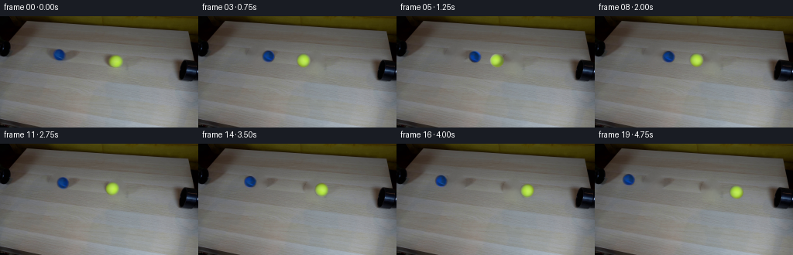
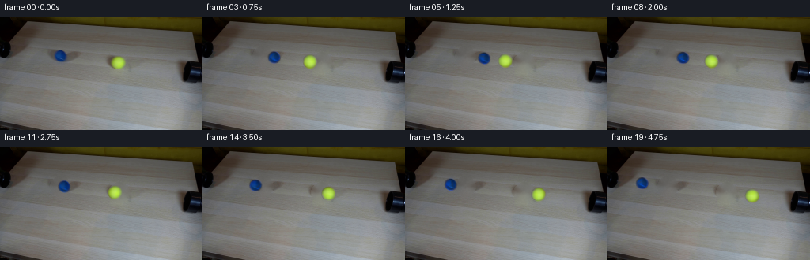
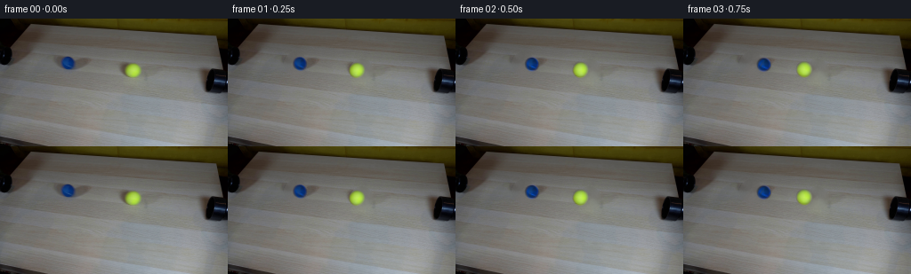

CODING AGENTS AS PIXEL WORLD MODELS
traex/DeepSeek-V4.1-Flash · 0033
点击播放 · 原生 RGB 像素
逐轮保存的候选
回放视频、检查图与代码变化。
每份候选均可单独播放。实际图片检查记录在下方工具轨迹中。
候选 01播放与检查图
点击播放 · 原生 RGB 像素

展开代码变化
--- 上一保存版本
+++ 本次保存版本
@@ -0,0 +1,231 @@
+from pathlib import Path
+
+import cv2
+import numpy as np
+from PIL import Image
+
+import artifact_io
+
+
+ROOT = Path(__file__).resolve().parent
+WIDTH, HEIGHT = 256, 144
+FRAME_COUNT = 20
+FPS = 4
+
+BLUE_START = np.array([76.155, 49.920], dtype=np.float64)
+YELLOW_START = np.array([149.652, 58.306], dtype=np.float64)
+BLUE_RADIUS = 8.25
+YELLOW_RADIUS = 9.15
+COLLISION_FRAME = 6.0
+
+
+def _smoothstep(edge0, edge1, value):
+ t = np.clip((value - edge0) / (edge1 - edge0), 0.0, 1.0)
+ return t * t * (3.0 - 2.0 * t)
+
+
+def _ball_rgba(frame, center, radius):
+ """Extract a clean, feathered sprite from the photographed first frame."""
+ pad = int(np.ceil(radius + 5.0))
+ cx, cy = center
+ x0 = max(0, int(np.floor(cx)) - pad)
+ y0 = max(0, int(np.floor(cy)) - pad)
+ x1 = min(WIDTH, int(np.ceil(cx)) + pad + 1)
+ y1 = min(HEIGHT, int(np.ceil(cy)) + pad + 1)
+
+ rgba = np.zeros((HEIGHT, WIDTH, 4), dtype=np.float32)
+ yy, xx = np.mgrid[y0:y1, x0:x1]
+ distance = np.hypot(xx - cx, yy - cy)
+ alpha = 1.0 - _smoothstep(radius - 0.75, radius + 0.55, distance)
+
+ rgba[y0:y1, x0:x1, :3] = frame[y0:y1, x0:x1].astype(np.float32)
+ rgba[y0:y1, x0:x1, 3] = alpha * 255.0
+ return rgba
+
+
+def _clean_plate(frame):
+ """Remove the photographed balls while preserving the surrounding table."""
+ mask = np.zeros((HEIGHT, WIDTH), dtype=np.uint8)
+ cv2.circle(
+ mask,
+ tuple(np.round(BLUE_START).astype(int)),
+ int(np.ceil(BLUE_RADIUS + 2.8)),
+ 255,
+ -1,
+ cv2.LINE_AA,
+ )
+ cv2.circle(
+ mask,
+ tuple(np.round(YELLOW_START).astype(int)),
+ int(np.ceil(YELLOW_RADIUS + 2.8)),
+ 255,
+ -1,
+ cv2.LINE_AA,
+ )
+
+ plate = cv2.inpaint(frame, mask, 6, cv2.INPAINT_TELEA).astype(np.float32)
+
+ # A very small amount of tabletop grain keeps the repaired area from looking
+ # like a perfectly smooth disc when the balls uncover it.
+ rng = np.random.default_rng(33)
+ grain = rng.normal(0.0, 1.0, (HEIGHT, WIDTH)).astype(np.float32)
+ grain = cv2.GaussianBlur(grain, (0, 0), 0.65)
+ feather = cv2.GaussianBlur(mask.astype(np.float32) / 255.0, (0, 0), 1.0)
+ plate += grain[:, :, None] * feather[:, :, None] * 1.25
+ return np.clip(plate, 0, 255).astype(np.uint8)
+
+
+def _motion_geometry():
+ delta = YELLOW_START - BLUE_START
+ separation = float(np.linalg.norm(delta))
+ direction = delta / separation
+
+ # Equal remaining path lengths after accounting for the two apparent radii.
+ meeting = BLUE_START + 0.5 * (
+ separation + BLUE_RADIUS - YELLOW_RADIUS
+ ) * direction
+ blue_contact = meeting - BLUE_RADIUS * direction
+ yellow_contact = meeting + YELLOW_RADIUS * direction
+ travel = float(np.linalg.norm(blue_contact - BLUE_START))
+ return direction, blue_contact, yellow_contact, travel
+
+
+def _pose(frame_index, direction, blue_contact, yellow_contact, travel):
+ speed = travel / COLLISION_FRAME
+ if frame_index <= COLLISION_FRAME:
+ blue_signed = speed * frame_index
+ yellow_signed = speed * frame_index
+ squash = 0.0
+ else:
+ blue_signed = travel - speed * (frame_index - COLLISION_FRAME)
+ yellow_signed = travel - speed * (frame_index - COLLISION_FRAME)
+ squash = 0.0
+
+ blue_pose = BLUE_START + blue_signed * direction
+ yellow_pose = YELLOW_START - yellow_signed * direction
+
+ distance_to_contact = abs(frame_index - COLLISION_FRAME)
+ if distance_to_contact < 1e-6:
+ squash = 0.055
+ elif distance_to_contact <= 1.0:
+ squash = 0.022
+ return blue_pose, yellow_pose, blue_signed, yellow_signed, squash
+
+
+def _warp_ball(rgba, source_center, destination_center, angle, squash):
+ sx = 1.0 - squash
+ sy = 1.0 / np.sqrt(sx)
+ matrix = cv2.getRotationMatrix2D(tuple(source_center), angle, 1.0)
+ matrix[:, 0] *= sx
+ matrix[:, 1] *= sy
+ matrix[:, 2] += destination_center - source_center
+ warped = cv2.warpAffine(
+ rgba,
+ matrix,
+ (WIDTH, HEIGHT),
+ flags=cv2.INTER_LINEAR,
+ borderMode=cv2.BORDER_CONSTANT,
+ borderValue=(0, 0, 0, 0),
+ )
+ return warped
+
+
+def _translate_map(values, source_center, destination_center):
+ matrix = np.array(
+ [[1.0, 0.0, destination_center[0] - source_center[0]],
+ [0.0, 1.0, destination_center[1] - source_center[1]]],
+ dtype=np.float64,
+ )
+ return cv2.warpAffine(
+ values,
+ matrix,
+ (WIDTH, HEIGHT),
+ flags=cv2.INTER_LINEAR,
+ borderMode=cv2.BORDER_CONSTANT,
+ borderValue=0,
+ )
+
+
+def _add_shadow(image, center, radius):
+ yy, xx = np.mgrid[0:HEIGHT, 0:WIDTH]
+ cx = center[0] + 1.4
+ cy = center[1] + radius * 0.62
+ rx = radius * 1.25
+ ry = radius * 0.48
+ field = ((xx - cx) / rx) ** 2 + ((yy - cy) / ry) ** 2
+ shadow = np.exp(-1.8 * field)
+ shadow *= 0.085
+ image *= 1.0 - shadow[:, :, None]
+
+
+def _composite_ball(frame, rgba, static_luma, source_center, destination_center):
+ alpha = rgba[:, :, 3] / 255.0
+ if float(alpha.max()) <= 0.0:
+ return
+
+ rgb = rgba[:, :, :3]
+ rotated_luma = (
+ 0.2126 * rgb[:, :, 0]
+ + 0.7152 * rgb[:, :, 1]
+ + 0.0722 * rgb[:, :, 2]
+ )
+ fixed_luma = _translate_map(static_luma, source_center, destination_center)
+
+ support = alpha > 0.015
+ mean_luma = max(float(rotated_luma[support].mean()), 1.0)
+ target_luma = fixed_luma * (0.90 + 0.10 * rotated_luma / mean_luma)
+ ratio = np.clip(target_luma / np.maximum(rotated_luma, 1.0), 0.55, 1.65)
+ rgb = np.clip(rgb * ratio[:, :, None], 0, 255)
+
+ a = alpha[:, :, None]
+ frame[:] = rgb * a + frame * (1.0 - a)
+
+
+def generate():
+ first = np.asarray(Image.open(ROOT / "first_frame.png").convert("RGB"), dtype=np.uint8)
+ if first.shape != (HEIGHT, WIDTH, 3):
+ raise ValueError(f"Unexpected first frame shape: {first.shape}")
+
+ clean = _clean_plate(first)
+ Image.fromarray(clean).save(ROOT / ".tmp" / "clean_plate.png")
+
+ blue_rgba = _ball_rgba(first, BLUE_START, BLUE_RADIUS)
+ yellow_rgba = _ball_rgba(first, YELLOW_START, YELLOW_RADIUS)
+ weights = np.array([0.2126, 0.7152, 0.0722], dtype=np.float32)
+ blue_luma = first.astype(np.float32) @ weights
+ yellow_luma = first.astype(np.float32) @ weights
+
+ direction, blue_contact, yellow_contact, travel = _motion_geometry()
+ frames = np.empty((FRAME_COUNT, HEIGHT, WIDTH, 3), dtype=np.uint8)
+ frames[0] = first
+
+ for index in range(1, FRAME_COUNT):
+ frame = clean.astype(np.float32)
+ blue_pos, yellow_pos, blue_signed, yellow_signed, squash = _pose(
+ float(index), direction, blue_contact, yellow_contact, travel
+ )
+
+ _add_shadow(frame, blue_pos, BLUE_RADIUS)
+ _add_shadow(frame, yellow_pos, YELLOW_RADIUS)
+
+ blue_angle = -np.degrees(blue_signed / BLUE_RADIUS)
+ yellow_angle = np.degrees(yellow_signed / YELLOW_RADIUS)
+ blue_warpped = _warp_ball(
+ blue_rgba, BLUE_START, blue_pos, blue_angle, squash
+ )
+ yellow_warpped = _warp_ball(
+ yellow_rgba, YELLOW_START, yellow_pos, yellow_angle, squash
+ )
+ _composite_ball(frame, blue_warpped, blue_luma, BLUE_START, blue_pos)
+ _composite_ball(
+ frame, yellow_warpped, yellow_luma, YELLOW_START, yellow_pos
+ )
+
+ frames[index] = np.clip(np.rint(frame), 0, 255).astype(np.uint8)
+
+ artifact_io.save(frames, ROOT)
+ return frames
+
+
+if __name__ == "__main__":
+ generate()
候选 02播放与检查图
点击播放 · 原生 RGB 像素


展开代码变化
--- 上一保存版本
+++ 本次保存版本
@@ -116,9 +116,14 @@
sx = 1.0 - squash
sy = 1.0 / np.sqrt(sx)
matrix = cv2.getRotationMatrix2D(tuple(source_center), angle, 1.0)
- matrix[:, 0] *= sx
- matrix[:, 1] *= sy
- matrix[:, 2] += destination_center - source_center
+ linear = matrix[:, :2] @ np.diag([sx, sy])
+ translation = (
+ source_center
+ - linear @ source_center
+ + destination_center
+ - source_center
+ )
+ matrix = np.c_[linear, translation]
warped = cv2.warpAffine(
rgba,
matrix,
可观测工具轨迹
实际执行的命令与返回图片。
命令 1exit 0
/bin/bash -c "pwd && rg --files -g '"'!*.git*'"' | sort"
命令 2exit 0
/bin/bash -c "sed -n '1,240p' prompt.txt"
命令 3exit 0
/bin/bash -c "sed -n '1,280p' GENERATION_RULES.md"
命令 4exit 0
/bin/bash -c 'file first_frame.png && identify first_frame.png 2>/dev/null || true && ffmpeg -version | head -n 3'
命令 5exit 0
/bin/bash -c "sed -n '1,260p' artifact_io.py"
命令 6exit 0
/bin/bash -c "sed -n '1,300p' player_template.html"
命令 7exit 0
/bin/bash -c "python - <<'PY' import importlib.util mods=['PIL','numpy','cv2','imageio','matplotlib'] for m in mods: print(m, bool(importlib.util.find_spec(m))) PY"
命令 8exit 0
/bin/bash -c "python - <<'PY'
from PIL import Image
import numpy as np
im=np.array(Image.open('first_frame.png').convert('RGB'))
print('shape',im.shape,'dtype',im.dtype,'minmax',im.min(),im.max())
print('mean',im.mean((0,1)), 'median',np.median(im.reshape(-1,3),0))
# top exact colors
u,c=np.unique(im.reshape(-1,3),axis=0,return_counts=True)
for i in np.argsort(c)[-30:][::-1]: print(c[i],u[i])
# quadrants and grid 8x8 mean
for y in [0,18,36,54,72,90,108,126,143]:
print('row',y, [tuple(im[y,x]) for x in [0,32,64,96,128,160,192,224,255]])
PY"命令 9exit 0
/bin/bash -c "python - <<'PY'
import cv2, numpy as np
im=cv2.imread('first_frame.png')
hsv=cv2.cvtColor(im,cv2.COLOR_BGR2HSV)
for name,mask in [
('yellow',((hsv[:,:,0]>=18)&(hsv[:,:,0]<=40)&(hsv[:,:,1]>120)&(hsv[:,:,2]>80))),
('blue',((hsv[:,:,0]>=90)&(hsv[:,:,0]<=130)&(hsv[:,:,1]>100)&(hsv[:,:,2]>60))),
('dark',hsv[:,:,2]<40),('bright',hsv[:,:,2]>170),('sat',hsv[:,:,1]>100)]:
ys,xs=np.where(mask)
print(name,len(xs),'bbox',None if not len(xs) else (xs.min(),ys.min(),xs.max(),ys.max()),'centroid',None if not len(xs) else (xs.mean(),ys.mean()))
# row/column projections peaks
if len(xs):
for axis,label in [(xs,'x'),(ys,'y')]:
vals,c=np.unique(axis,return_counts=True); idx=np.argsort(c)[-12:][::-1]
print(label,[(int(vals[i]),int(c[i])) for i in idx])
PY"命令 10exit 0
/bin/bash -c "python - <<'PY'
from PIL import Image
im=Image.open('first_frame.png')
im.resize((1024,576),Image.Resampling.NEAREST).save('.tmp/first_zoom.png')
# print ANSI halfblock approximation (256->128, 144->72), preserve enough structure
import numpy as np
a=np.array(im.convert('RGB'))
# sample 4x4 regions, map luminance and chroma to ansi 24bit? just ascii lum
for y in range(0,144,3):
s=''
for x in range(0,256,3):
q=a[y:y+3,x:x+3].mean((0,1)); lum=.2126*q[0]+.7152*q[1]+.0722*q[2]
s += ' .:-=+*#%@'[min(9,int(lum/256*10))]
print(s)
PY"命令 11exit 0
/bin/bash -c "python - <<'PY'
import cv2, numpy as np
im=cv2.imread('first_frame.png')
g=cv2.cvtColor(im,cv2.COLOR_BGR2GRAY)
print('gray range',g.min(),g.max(),'mean',g.mean())
# Hough lines
for th in [30,50,70]:
e=cv2.Canny(g,40,100)
lines=cv2.HoughLinesP(e,1,np.pi/180,threshold=th,minLineLength=20,maxLineGap=4)
print('th',th,'n',0 if lines is None else len(lines))
if lines is not None:
ls=sorted([tuple(l[0]) for l in lines], key=lambda z: -((z[2]-z[0])**2+(z[3]-z[1])**2))[:25]
print(ls)
# Sobel edge strength row/col
sx=np.abs(cv2.Sobel(g,cv2.CV_32F,1,0,ksize=3)).mean(1)
sy=np.abs(cv2.Sobel(g,cv2.CV_32F,0,1,ksize=3)).mean(0)
print('strong rows',sorted(enumerate(sx),key=lambda z:-z[1])[:20])
print('strong cols',sorted(enumerate(sy),key=lambda z:-z[1])[:20])
PY"命令 12exit 0
/bin/bash -c "python - <<'PY'
import cv2, numpy as np
im=cv2.imread('first_frame.png')
hsv=cv2.cvtColor(im,cv2.COLOR_BGR2HSV)
# clusters ball colors via connected components
for name, mask in [('yellow',cv2.inRange(hsv,np.array([18,110,65]),np.array([42,255,255]))),('blue',cv2.inRange(hsv,np.array([88,80,45]),np.array([135,255,255]))),('pipe',cv2.inRange(hsv,np.array([0,0,0]),np.array([180,255,90])))]:
n, lab, stats, cent=cv2.connectedComponentsWithStats(mask)
comps=sorted([(stats[i,4],tuple(stats[i,:4]),tuple(cent[i])) for i in range(1,n)],reverse=True)[:12]
print(name,'\\n',comps)
# sample crop means bbox ball
for x0,y0,x1,y1 in [(66,42,85,59),(140,49,160,67),(0,30,20,75),(236,35,256,80),(70,55,85,75),(40,60,100,90)]:
c=im[y0:y1,x0:x1][:,:,::-1]; print((x0,y0,x1,y1),'mean',c.mean((0,1)),'min',c.min((0,1)),'max',c.max((0,1)))
PY"命令 13exit 0
/bin/bash -c "python - <<'PY'
from PIL import Image
import numpy as np, colorsys
im=np.array(Image.open('first_frame.png').convert('RGB'))
# chars based on luminance + hue classes
def cl(rgb):
r,g,b=rgb/255
h,s,v=colorsys.rgb_to_hsv(r,g,b)
if s>.32:
if h<.09 or h>.94:return 'R'
if h<.17:return 'O'
if h<.25:return 'Y'
if h<.42:return 'G'
if h<.63:return 'C'
if h<.80:return 'B'
return 'M'
lum=.2126*rgb[0]+.7152*rgb[1]+.0722*rgb[2]
return ' .:-=+*#%@'[min(9,int(lum/256*10))]
for x0,x1 in [(0,64),(64,192),(192,256)]:
print('\\nX',x0,x1)
for y in range(24,96,2):
s=''
for x in range(x0,x1,2):
p=im[y:y+2,x:x+2].mean((0,1)).astype(int)
s+=cl(p)
print(f'{y:03d} '+s)
PY"命令 14exit 0
/bin/bash -c "python - <<'PY'
import cv2,numpy as np
im=cv2.imread('first_frame.png')
g=cv2.cvtColor(im,cv2.COLOR_BGR2GRAY)
# CLAHE grayscale ASCII and color labels
for y in range(0,144,2):
s=''
for x in range(0,256,2):
q=g[y:y+2,x:x+2].mean()
s+=' .:-=+*#%@'[min(9,int(q/200*10))]
print(f'{y:03d} {s}')
PY"命令 15exit 0
/bin/bash -c "python - <<'PY'
from PIL import Image
import numpy as np
im=np.array(Image.open('first_frame.png').convert('RGB')).astype(int)
def show(cx,cy,r=14):
print('CROP',cx,cy)
for y in range(cy-r,cy+r+1):
row=''
for x in range(cx-r,cx+r+1):
R,G,B=im[y,x]; mx=max(R,G,B); mn=min(R,G,B); sat=mx-mn
if sat<20: row+=' .:-=+*#%@'[min(9,int(mx/241*10))]
elif B-R>25 and B-G>10: row+='B'
elif R>G>B and G-B>25: row+='Y'
elif G-R>20 and G-B>20: row+='G'
elif R-B>30 and R-G>10: row+='R'
else: row+='o'
print(f'{y:3d} {row}')
show(76,50); show(149,58)
PY"命令 16exit 0
/bin/bash -c "python - <<'PY'
from PIL import Image
import numpy as np
im=np.array(Image.open('first_frame.png').convert('RGB')).astype(int)
# print color values across row y=49 x0:256
for y in [41,43,46,49,52,55,58,61,64,67,70,73]:
print('y',y)
for x in range(0,256,8): print(f'{x}:{tuple(im[y,x])}',end=' ')
print()
PY"命令 17exit 0
/bin/bash -c "python - <<'PY'
from PIL import Image
import numpy as np
im=np.array(Image.open('first_frame.png').convert('RGB'))
# dump nearest-crop upscaled visually via sixel unavailable; inspect segmentation around balls and edges with coords
for name,(x0,y0,x1,y1) in {'leftpipe':(0,0,70,120),'rightpipe':(210,0,256,120),'tabletop':(60,30,220,90)}.items():
print('\\n',name)
# save for possible browser screenshot
Image.fromarray(im[y0:y1,x0:x1]).resize(((x1-x0)*8,(y1-y0)*8),Image.Resampling.NEAREST).save(f'.tmp/{name}.png')
# mask table top color segmentation
rgb=im.astype(int); mx=rgb.max(2); mn=rgb.min(2); sat=mx-mn
for th in [10,15,20,25,30]:
m=(sat<th)&(mx>50)&(mx<180)
ys,xs=np.where(m)
print(th, len(xs), (xs.min(),ys.min(),xs.max(),ys.max()), 'row counts',[(y,int(m[y].sum())) for y in [30,40,45,50,55,60,65,70,80,100,120,140]])
PY"命令 18exit 0
/bin/bash -c "python - <<'PY'
from PIL import Image
import numpy as np
im=np.array(Image.open('first_frame.png').convert('RGB')).astype(float)
for name,(cx,cy,r) in [('blue',(76,50,9)),('yellow',(149,58,10))]:
print(name)
for y in range(cy-r,cy+r+1):
row=[]
for x in range(cx-r,cx+r+1):
d=((x-cx)**2+(y-cy)**2)**.5
p=im[y,x]
if d>r+1: row.append(' ')
else:
lum=.2126*p[0]+.7152*p[1]+.0722*p[2]
row.append(f'{int(lum):3d}')
print(y,' '.join(row))
PY"命令 19exit 0
/bin/bash -c "python - <<'PY'
from PIL import Image
import numpy as np
im=np.array(Image.open('first_frame.png').convert('RGB')).astype(float)
for y in [44,45,46,47,48,49,50,51,52,53,54,55,56,57,58,59,60,61,62,63,64,65,66]:
p=im[y]
sat=p.max(1)-p.min(1)
m=(sat>28)&(p.max(1)>40)
# contiguous runs
d=np.diff(np.r_[False,m,False].astype(int)); starts=np.where(d==1)[0]; ends=np.where(d==-1)[0]
print(y,[(int(a),int(b-1)) for a,b in zip(starts,ends) if b-a>=2])
PY"命令 20exit 0
/bin/bash -c "python - <<'PY'
import cv2, numpy as np
im=cv2.imread('first_frame.png')
# local edge lines around pipes
for name,(x0,y0,x1,y1) in [('left',(0,0,65,90)),('right',(210,0,256,90)),('whole',(0,0,256,144))]:
c=im[y0:y1,x0:x1]; g=cv2.cvtColor(c,cv2.COLOR_BGR2GRAY)
e=cv2.Canny(g,20,60)
lines=cv2.HoughLinesP(e,1,np.pi/360,threshold=12,minLineLength=12,maxLineGap=3)
print(name)
if lines is not None:
ls=sorted([tuple(map(int,l[0])) for l in lines], key=lambda z:-((z[2]-z[0])**2+(z[3]-z[1])**2))[:35]
print([(a+x0,b+y0,c+x0,d+y0) for a,b,c,d in ls])
PY"命令 21exit 0
/bin/bash -c "python - <<'PY'
import cv2,numpy as np
im=cv2.imread('first_frame.png'); rgb=im[:,:,::-1].astype(float)
mx=rgb.max(2); mn=rgb.min(2); sat=mx-mn
# masks based on saturation/hue near known centers
for name,c0,kind in [('blue',(76,50),'b'),('yellow',(149,58),'y')]:
x0,y0=c0
yy,xx=np.mgrid[max(0,y0-14):y0+15,max(0,x0-14):x0+15]
p=rgb[yy,xx]; R,G,B=p[:,:,0],p[:,:,1],p[:,:,2]
if kind=='b': m=(B-R>20)&(B-G>8)&(B>40)
else: m=(G-B>15)&(G-R>10)&(G>70)
pts=np.c_[xx[m],yy[m]]
# algebraic circle fit
A=np.c_[2*pts[:,0],2*pts[:,1],np.ones(len(pts))]; b=(pts**2).sum(1)
sol=np.linalg.lstsq(A,b,rcond=None)[0]; cx,cy=sol[:2]; r=np.sqrt(sol[2]+cx*cx+cy*cy)
print(name,len(pts),'fit',cx,cy,r,'bbox',pts.min(0),pts.max(0),'mean',pts.mean(0))
# extents per row
for y in range(pts[:,1].min(),pts[:,1].max()+1):
xs=pts[pts[:,1]==y,0]
if len(xs): print(y,xs.min(),xs.max(),len(xs))
PY"命令 22exit 1
/bin/bash -c 'mkdir -p .tmp && python generate.py'
命令 23exit 1
/bin/bash -c 'python generate.py'
命令 24exit 0
/bin/bash -c 'python generate.py && ls -lh frames/*.png inspection.png pixels.npz index.html'
命令 25exit 0
/bin/bash -c "python - <<'PY'
from PIL import Image
import numpy as np
orig=np.array(Image.open('first_frame.png').convert('RGB'))
frames=np.stack([np.array(Image.open(f'frames/{i:02d}.png').convert('RGB')) for i in range(20)])
print('frame0 exact:',np.array_equal(frames[0],orig))
for i,f in enumerate(frames):
# find saturated blue and yellow pixels
R,G,B=[f[:,:,j].astype(int) for j in range(3)]
bm=(B-R>20)&(B-G>7)&(B>35)
ym=(G-B>18)&(G-R>12)&(G>75)
def info(m):
ys,xs=np.where(m)
if not len(xs):return None
return (len(xs),round(xs.mean(),2),round(ys.mean(),2),(xs.min(),ys.min(),xs.max(),ys.max()))
print(i,'blue',info(bm),'yellow',info(ym),'mean',np.round(f.mean((0,1)),1))
PY"命令 26exit 0
/bin/bash -c "python - <<'PY'
from PIL import Image
import numpy as np
# Make enlarged contact sheet from key frames to reason about placement and continuity.
frames=[Image.open(f'frames/{i:02d}.png').convert('RGB') for i in range(20)]
for group in [(0,3,6,9,12,15,19),(1,2,4,5,7,8,10,11)]:
sheet=Image.new('RGB',(256*len(group),144),(20,20,20))
for j,i in enumerate(group): sheet.paste(frames[i],(256*j,0))
sheet.resize((512*len(group),288),Image.Resampling.NEAREST).save('.tmp/contact_'+str(group[0])+'.png')
# Error from first frame outside changed regions
f0=np.array(frames[0]).astype(int); f1=np.array(frames[1]).astype(int)
d=np.abs(f0-f1).max(2)
print('changed pixels frame1',np.sum(d>0),'mean',d.mean(),'max',d.max())
# clean plate stats
clean=np.array(Image.open('.tmp/clean_plate.png'))
for p in [(76,50),(149,58),(72,54),(155,64)]: print('clean',p,clean[p[1],p[0]])
PY"命令 27exit 0
/bin/bash -c 'python generate.py'
命令 28exit 0
/bin/bash -c "python - <<'PY'
from PIL import Image
import numpy as np
frames=np.stack([np.array(Image.open(f'frames/{i:02d}.png').convert('RGB')) for i in range(20)])
for i,f in enumerate(frames):
R,G,B=[f[:,:,j].astype(int) for j in range(3)]
bm=(B-R>20)&(B-G>7)&(B>35)
ym=(G-B>18)&(G-R>12)&(G>75)
def info(m):
ys,xs=np.where(m)
return None if not len(xs) else (round(xs.mean(),2),round(ys.mean(),2),(xs.min(),ys.min(),xs.max(),ys.max()),len(xs))
print(i,info(bm),info(ym))
PY"命令 29exit 0
/bin/bash -c "python - <<'PY'
import numpy as np
from PIL import Image
f=np.array(Image.open('frames/06.png').convert('RGB')).astype(int)
# print colored sprite bboxes with hue-ish masks restricted central area
for name,(x0,x1) in [('blue',(105,145)),('yellow',(115,160))]:
c=f[38:78,x0:x1]
R,G,B=[c[:,:,i] for i in range(3)]
if name=='blue': m=(B-R>20)&(B-G>7)&(B>35)
else: m=(G-B>18)&(G-R>12)&(G>75)
ys,xs=np.where(m)
print(name,'n',len(xs),'centroid',x0+xs.mean(),38+ys.mean(),'bbox',(x0+xs.min(),38+ys.min(),x0+xs.max(),38+ys.max()))
# distance between color centroids from 0 should be >= ~14.5
# print RGB values at centers
for x,y in [(142,60),(150,62),(137,58),(155,61)]: print(x,y,tuple(f[y,x]))
PY"命令 30exit 0
/bin/bash -c "python - <<'PY'
# Print masks and mask centers of blue/yellow pixels restricted to central region for frame 6
from PIL import Image
import numpy as np
f=np.array(Image.open('frames/06.png').convert('RGB')).astype(int)
R,G,B=[f[:,:,i] for i in range(3)]
mb=(B-R>20)&(B-G>7)&(B>35); my=(G-B>18)&(G-R>12)&(G>75)
# contiguous components in central
import cv2
for name,m in [('b',mb),('y',my)]:
m=m.astype('uint8'); n,l,st,ct=cv2.connectedComponentsWithStats(m)
print(name,[(st[i].tolist(),ct[i].tolist()) for i in range(1,n) if st[i,4]>3])
for y in range(43,72):
row=''
for x in range(100,170):
if mb[y,x]:row+='B'
elif my[y,x]:row+='Y'
else:
lum=int(.2126*f[y,x,0]+.7152*f[y,x,1]+.0722*f[y,x,2])
row+=' .:-=+*#%@'[min(9,lum//20)]
print(f'{y:02d}',row)
PY"命令 31exit 0
/bin/bash -c "python - <<'PY'
# Global blue component positions per frame (central only), using hue-like color threshold
from PIL import Image
import numpy as np, cv2
for i in range(1,20):
f=np.array(Image.open(f'frames/{i:02d}.png').convert('RGB')).astype(int)
R,G,B=[f[:,:,j] for j in range(3)]
for name,m in [('b',(B-R>20)&(B-G>7)&(B>35)),('y',(G-B>18)&(G-R>12)&(G>75))]:
m=m.astype('uint8');n,l,st,ct=cv2.connectedComponentsWithStats(m)
comps=[(int(st[j,4]),tuple(np.round(ct[j],2)),tuple(st[j,:4])) for j in range(1,n) if st[j,4]>30 and 60<ct[j,0]<200 and 30<ct[j,1]<90]
print(i,name,comps)
PY"命令 32exit 0
/bin/bash -c "python - <<'PY'
from PIL import Image
import numpy as np, cv2
for i in range(14,20):
f=np.array(Image.open(f'frames/{i:02d}.png').convert('RGB')).astype(int)
R,G,B=[f[:,:,j] for j in range(3)]
m=(B-R>20)&(B-G>7)&(B>35)
m=m.astype('uint8');n,l,st,ct=cv2.connectedComponentsWithStats(m)
comps=[(int(st[j,4]),tuple(np.round(ct[j],2)),tuple(st[j,:4])) for j in range(1,n) if st[j,4]>2]
print(i,comps)
PY"命令 33exit 0
/bin/bash -c "python - <<'PY'
from PIL import Image
import numpy as np
for i in [0,1,2,3,4,5,6,7,8,9,10,11,12,15,19]:
a=np.array(Image.open(f'frames/{i:02d}.png').convert('RGB'))
# enlarged central strip and full frame side by side
crop=a[34:78,30:205]
Image.fromarray(crop).resize((700,176),Image.Resampling.NEAREST).save(f'.tmp/crop_{i:02d}.png')
PY"命令 34exit 0
/bin/bash -c "python - <<'PY'
# Print hue-classified central crops (same scale, 1 px char) for frames 0,6,19
from PIL import Image
import numpy as np
for i in [0,6,19]:
a=np.array(Image.open(f'frames/{i:02d}.png').convert('RGB')).astype(int)
print('\\nFRAME',i)
for y in range(40,72,1):
s=''
for x in range(35,195,1):
r,g,b=a[y,x]
if b-r>20 and b-g>7 and b>35:s+='B'
elif g-b>18 and g-r>12 and g>75:s+='Y'
else:
lum=int(.2126*r+.7152*g+.0722*b);s+=' .:-=+*#%@'[min(9,lum//20)]
print(f'{y:02d} {s}')
PY"命令 35exit 0
/bin/bash -c "python - <<'PY'
import numpy as np
from PIL import Image
f=np.array(Image.open('frames/00.png').convert('RGB')).astype(int)
# print RGB map within blue mask to see true disc shape
for y in range(40,60):
row=[]
for x in range(65,90):
r,g,b=f[y,x]; row.append('B' if b-r>20 and b-g>7 and b>35 else ' ')
print(f'{y:02d}',''.join(row))
# yellow
print('yellow')
for y in range(47,70):
row=[]
for x in range(136,163):
r,g,b=f[y,x]; row.append('Y' if g-b>18 and g-r>12 and g>75 else ' ')
print(f'{y:02d}',''.join(row))
PY"命令 36exit 0
/bin/bash -c "python - <<'PY'
import cv2,numpy as np
im=cv2.imread('first_frame.png'); hsv=cv2.cvtColor(im,cv2.COLOR_BGR2HSV)
# connected components for bins of hue/sat/value
for desc,lo,hi in [('blue',[85,80,35],[135,255,255]),('green-yellow',[25,100,55],[55,255,255]),('yellow',[15,100,55],[25,255,255]),('orange-red',[0,120,55],[15,255,255]),('red2',[165,120,55],[180,255,255]),('sat',[0,70,20],[180,255,255])]:
m=cv2.inRange(hsv,np.array(lo),np.array(hi))
n,l,st,ct=cv2.connectedComponentsWithStats(m)
comps=[]
for i in range(1,n):
a=int(st[i,4]);
if a>=15: comps.append((a,tuple(int(v) for v in st[i,:4]),tuple(np.round(ct[i],1))))
comps=sorted(comps,reverse=True)[:25]
print(desc, comps)
# hue hist for sat>80 excluding image edge maybe
sel=(hsv[:,:,1]>80)&(hsv[:,:,2]>40)
h=np.bincount(hsv[:,:,0][sel],minlength=180)
print('hue peaks',sorted(enumerate(h),key=lambda z:-z[1])[:25])
# bins of color by x/y
for y0 in [0,20,40,60,80,100,120,140]:
print('row',y0,'HSV mean',hsv[y0].mean(0),'RGB',im[y0,:,::-1].mean(0))
PY"命令 37exit 0
/bin/bash -c "python - <<'PY'
from PIL import Image
import numpy as np
f=np.array(Image.open('first_frame.png').convert('RGB')).astype(int)
# Save a large 16x close-up of the ball contact region as a PNG and inspect color arrays
for name,(x0,y0,x1,y1) in [('balls',(60,35,168,75)),('leftpipe',(0,0,50,100)),('rightpipe',(225,0,256,100))]:
Image.fromarray(f[y0:y1,x0:x1].astype('uint8')).resize(((x1-x0)*12,(y1-y0)*12),Image.Resampling.NEAREST).save(f'.tmp/{name}_big.png')
# Estimate image sharpness / grain and whether input is AI-ish
print('unique',len(np.unique(f.reshape(-1,3),axis=0)))
PY"命令 38exit 0
/bin/bash -c "python - <<'PY'
from PIL import Image
import numpy as np
im=np.array(Image.open('first_frame.png').convert('RGB'))
# print dither map around table for visual artifact detection: 8x8 luma means
for y in range(30,90,4):
print(y,' '.join(f'{im[y:y+4,x:x+4].mean():.0f}' for x in range(40,230,4)))
PY"保存候选 2 份；完成命令 38 次；可验证图片返回 0 张。原始 API 响应与完整日志保留在本地。